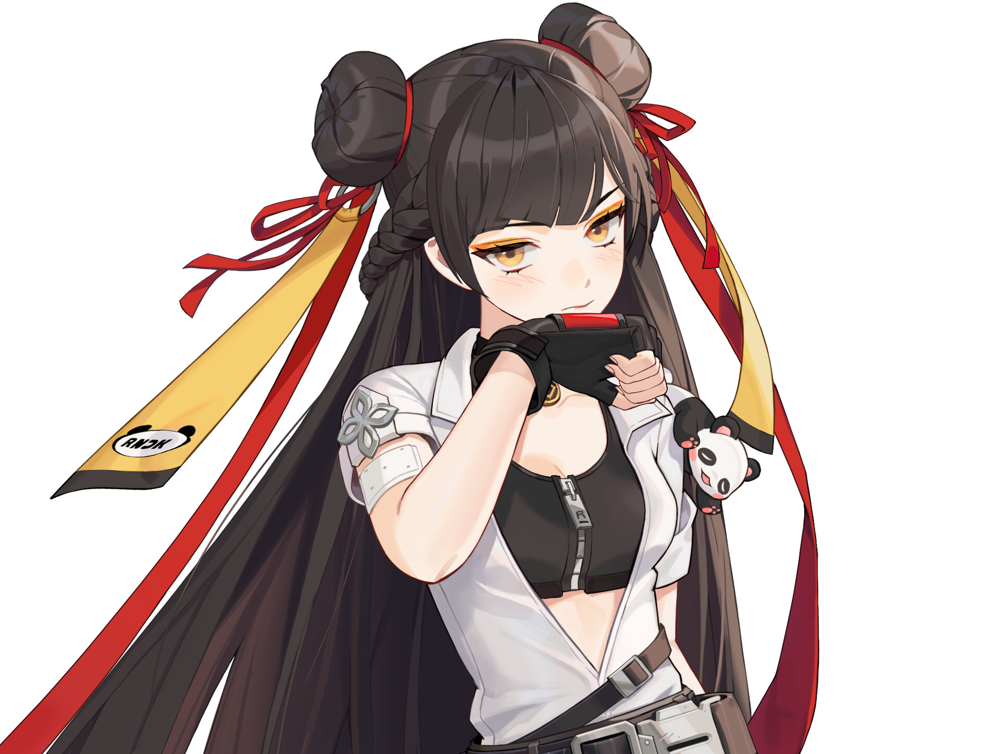

리다이린 공략

- 병원
고철, 타이즈가 부족해도 다음 루트로 이동
호텔, 번화가에서 모두 나옴
텔레포트 타면서 물 2개 다 먹는것 추천
(보통 1일 낮 2분40초 남았을때 텔레포트 탈거임)
- 번화가
만약 옷감이 부족해도 다음 루트로 이동
추천 나중에 연못에서 초코파이 상자만들면 든든함
(보통 1일 낮 2분 남았을때 텔레포트 탈거임)
- 모래사장
발터, 피아노선 (둘다 호텔에 뜸)
망치, 거북이등딱지 (둘다 연못에 뜸) 부족해도 넘어가면됨
모사에서 호텔갈때 호텔 넘어가는방향 돌 캐는거 추천 (다리나옴)
(보통 1일 낮 1분20초 남았을때 호텔 넘어감)
- 호텔
못먹은 템 다 먹기
CCTV 옆 들개 잡고 가죽 챙겨가는거 추천 (팔 나옴)
(보통 1일 낮 40초 남았을때 연못 갈거임)
- 연못
못먹은 템 다 먹기
꽃,리본 부족하면 묘지 잘못해서 가면(머리띠+깃털) 만들었어도 묘지
ㄴ(여기서 나뭇가지 챙기면 됨)
(빠르면 1일 밤으로 넘어갈 시점, 보통 1일 밤 2분10초 남았을 시점에 풀템 완성됨)
- 집사복
시체보면 보통 있음 직접 만들필요 없음
- 포스코어
오토암즈 천사의고리 헤르메스부츠
- VF혈액샘플
히드라(미리 빌드업)-버건디-변검-분홍신
- 운석
왠만하면 포스코어, 게임 후반이라면 임시금구, 막금구용 달빛팬던트